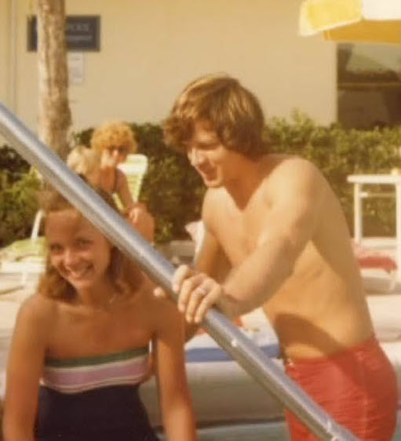
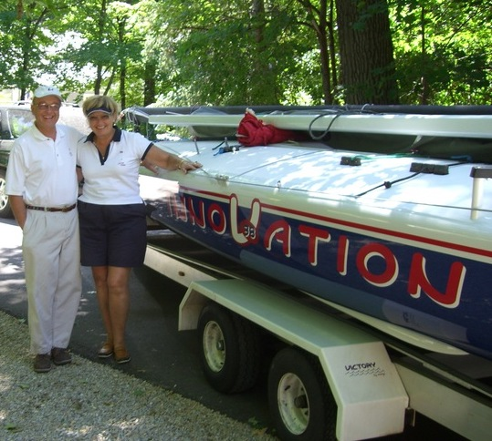

Why
Gary and Charyl DeSantis - owners/operators of Sailors World
Marina and Boat Club on Smiths Bay, where many members filled their gas tanks and
purchased sailboats, had become well known and
loved throughout the community... and with 5 lunatic kids in tow
they strived to keep Sailors World a place for all to feel welcome
and important.
Gary was a long standing crew as a main sail/spinnaker trimmer on Willie Crear's many Ascows with some pretty cool stories - like when my dad climbed the Ascow mast to the spreaders in the middle of a race and peed on Willie and the crew :)
Gary and wife Cheryl also crewed on Dan Crears' "E" boat and raced at Wayzata Club quite a
bit. Cheryl was also a crew, and was best know for
her willingness to help out with social events and parties
throughout her life. Always the first to jump in and help.

Growing up in Minnetonka Beach
Growing up with his mother, father and sister (Eleverna, Ernie & Mary DeSantis) on Mtka Beach down the shore from Layfyette Club, he soon found Cheryl Sayler, who together, would make Sailors World on Smiths Bay a home away from home for many throughout the community.

Brad Robinson
Brad Robinson sailed his last race on October 17, 2015, leaving behind an enduring legacy of honor, passion and generosity to the sailing community he loved.

In 1949 Robinson enrolled at Minnetonka Sailing School, where he was involved for the rest of his life as a student, instructor, chairman and board member, growing alongside it. His Scow sailing career spanned nearly seven decades.
Brad Robinson was a scow sailor... Growing up on the shores of Lake Minnetonka, he discovered his passion at a young age and spent much of his competitive sailing career developing ways to improve the performance of his sailboats. In retirement, this drive for advancement in sailboat design and technology led him to establish Victory By Design, LLC. He then built Victory, a class legal A Scow, to be the proof boat for his real dream of a totally carbon fiber ultra light V38: InnoVation.
An integral member of the InnoVation racing crew, Susana mans the tender boat for every race, always ready with supplies and extra crew. She and the crew plan to continue sailing InnoVation to honor Brad's legacy. Susana will also continue using their tender boat to support Jud Dayton’s A Scow, Instigator.
